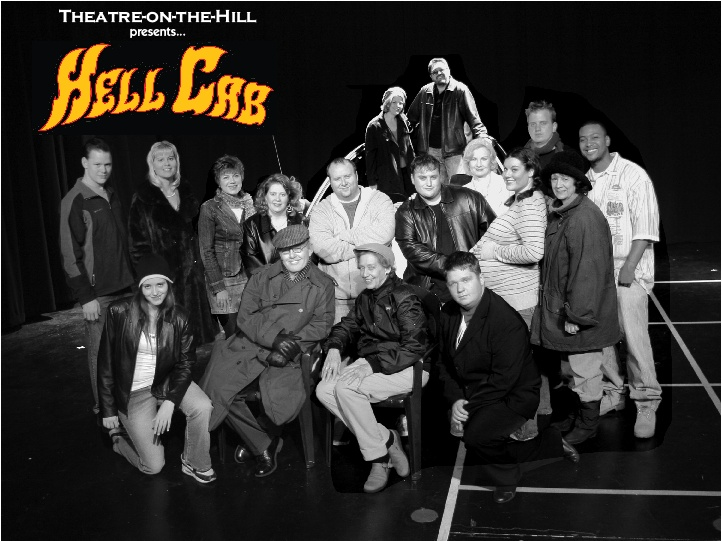
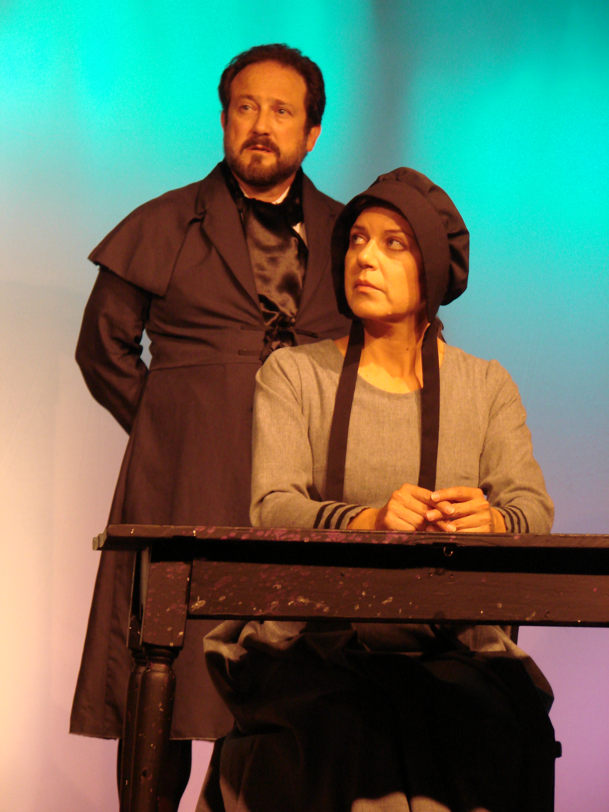
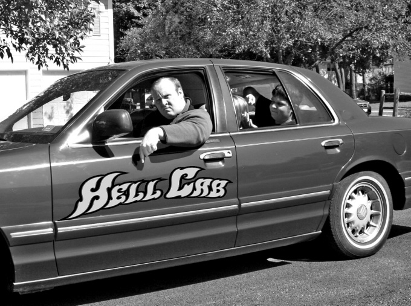

Hell Cab: Revisited
Hell Cab: The Cast
'Twas the Night Before Christmas
Greetings Fans! What better way to get yourself into the spirit of the season than a night of holiday music and storytelling? I can think of none better, especially when one of the storytellers will be Carol! WHAT?…
Carol Returns to Downers Grove!
[missing image] halfloveslogo300.gif original: http://3.bp.blogspot.com/xgOEfuf9tiQ/R04-1whvQtI/AAAAAAAAAIA/bxcJuQ0i1Lw/s320/halfloveslogo300.gif Hi fans! Some of you may recall Carol in the Grove Players production of…
Carol: Fabulous Tastings of Vodka for Make Benefit Glorious Nation of Kazakhstan
Hello! Carol will be in picturesque South Elgin tomorrow (Wednesday, 11/21) to promote Snow Queen Vodka-- a product of Kazakhstan. Very Nice! If you would like to sample this exquisite award-winning vodka and pick up a…
A message from Carol
Howdy! Thanks to everyone who came out to DeKalb to see The Crucible! I REALLY appreciate it! Not a whole lot of laughs in that one, unless you did a LOT of drinking before the show, which generally seemed to be the…
Take a ride in the Hell Cab
Hell Cab is not for those who blush at dirty jokes or wither at the use of strong language. Hell Cab is not for the easily offended or the easily disturbed. If you're a mamma's boy, milktoast, sissyboy, then Hell Cab…
1 commentFancy a spot of tea?
Greetings, fans! If you're in the mood for a spot of tea, why not head out to the DeKalb Wal-Mart this Sunday (10/21), where Carol will be handing out samples of various Lipton teas. Carol will also be working as a…

Which witch is which?
One week down, one to go-- only four more chances to see the Crucible before it closes! I am planning to attend next Friday (10/12) and Sunday (final show). Not only will you get to see Carol portray the smiling Ann…

Hellcab
FOR IMMEDIATE RELEASE Theatre-on-the-Hill Goes for a Wild Ride in "Hellcab," Opening October 26 An eclectic collection of scenes from a day in the life of a Chicago cab driver, Hellcab is a raucous new play that cruises…
Check out those Curves!
While acting is our starlet's dream, it isn't paying the bills (yet!). So, as you may have noticed, Carol has been working a number of other odd-jobs to add some black to the books. Carol is on the way to setting a…